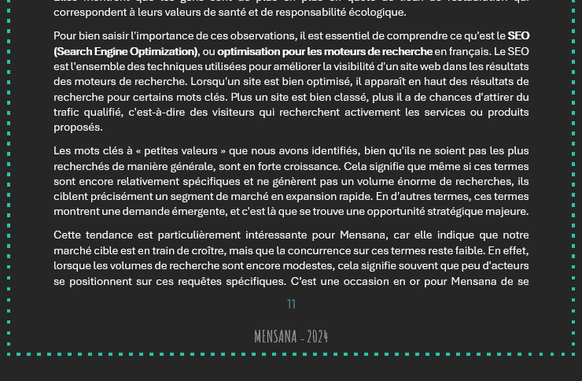
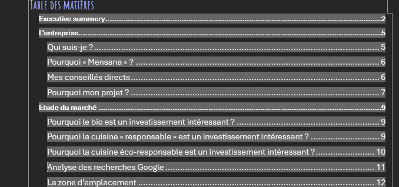
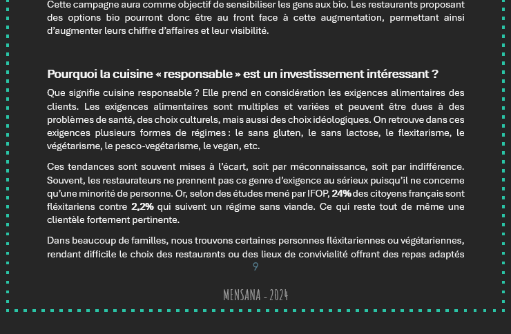
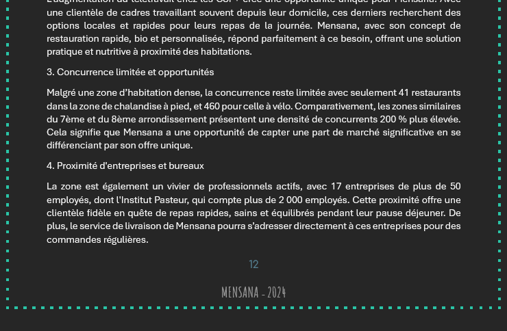

Business plans — Étude 01
Mensana — étude de marché et business plan
Exercice d'analyse et de rédaction : établir l'étude de marché et le business plan d'un concept de restauration rapide saine et responsable. Mensana est un nom de marque inventé.
Contexte
L'exercice consistait à évaluer la viabilité d'un concept de restauration rapide saine et responsable — produits bio et locaux, plats adaptés à différents régimes alimentaires, service rapide — puis à en formaliser le business plan : résumé opérationnel, présentation de l'entreprise, étude de marché, analyse de la zone d'implantation et conclusion.
Le travail devait s'appuyer sur des données réelles : marché de l'alimentation bio, profils de consommateurs, zone de chalandise, densité concurrentielle et employeurs présents à proximité.
Méthode
L'étude a été construite en trois volets :
- étude de marché documentaire — consommation et notoriété des produits bio (Agence BIO), profils de consommateurs et régimes alimentaires (IFOP), pratiques éco-responsables et gaspillage alimentaire (ADEME et GreenFlex) ;
- analyse de la demande en ligne — volumes et tendances de recherche mesurés avec Google Keyword Planner et SemRush sur les requêtes « Restaurant bio Paris », « Restaurant healthy Paris » et « Food healthy Paris » ;
- analyse de la zone d'implantation — zone de chalandise, passages, densité de la concurrence et densité d'employeurs sur le secteur retenu (15e arrondissement de Paris).

Résultat
Les tableaux ci-dessous reprennent les données de marché et d'implantation retenues dans l'étude. Les valeurs proviennent des sources citées.
| Indicateur | Valeur | Source |
|---|---|---|
| Consommateurs bio : à domicile / au restaurant | 91 % / 9 % | Agence BIO |
| Français consommant régulièrement du bio | près de 61 % | Agence BIO |
| Flexitariens / régime sans viande | 24 % / 2,2 % | IFOP |
| Français influencés par les pratiques éco-responsables | 75 % | IFOP |
| Prêts à payer plus cher une alimentation plus respectueuse | 56 % | GreenFlex / ADEME |
| Indicateur | Valeur |
|---|---|
| Passages quotidiens devant le local | plus de 11 000 |
| Habitants à 5 minutes à pied | 11 000 |
| Ménages à 5 minutes à pied | 6 000 |
| Habitants à 5 minutes à vélo (livraison) | 165 000 |
| Ménages à 5 minutes à vélo | 90 000 |
| Salaire médian annuel | 38 000 € |
| Part de CSP+ | 63 % |
| Indicateur | Valeur |
|---|---|
| Restaurants dans la zone à pied | 41 |
| Restaurants dans la zone à vélo | 460 |
| Densité concurrentielle des 7e et 8e arrondissements (comparaison) | densité supérieure de 200 % |
| Entreprises de plus de 50 employés à proximité | 17 |
| Effectif de l'Institut Pasteur (à proximité) | plus de 2 000 employés |



L'étude documentaire porte sur le marché et l'implantation. Les projections financières (compte de résultat, plan de financement) font l'objet d'un modèle d'exploitation distinct, présenté dans la section Excel du portfolio.
Ce que cela démontre
Construction d'une méthodologie d'étude de marché à partir de sources institutionnelles et d'outils d'analyse de recherche, puis exploitation des résultats pour argumenter un positionnement. Analyse d'une zone de chalandise et d'une concurrence locales pour évaluer un potentiel commercial.